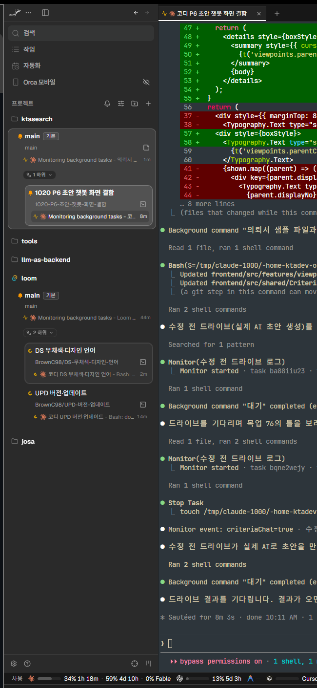
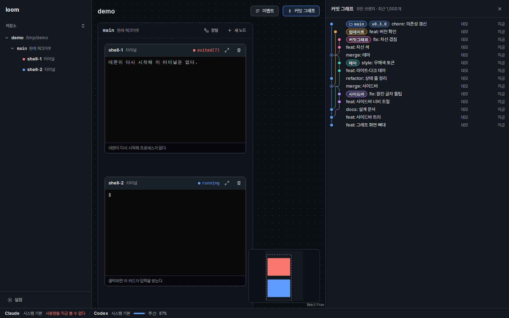
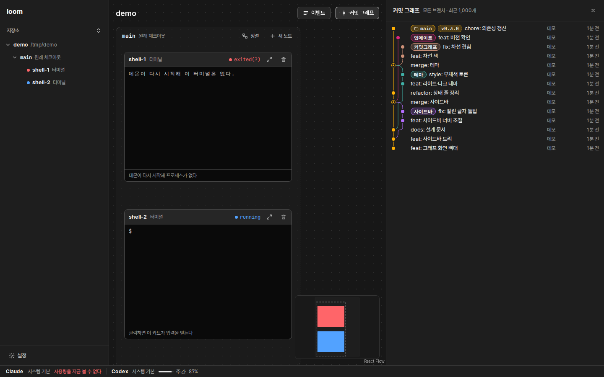
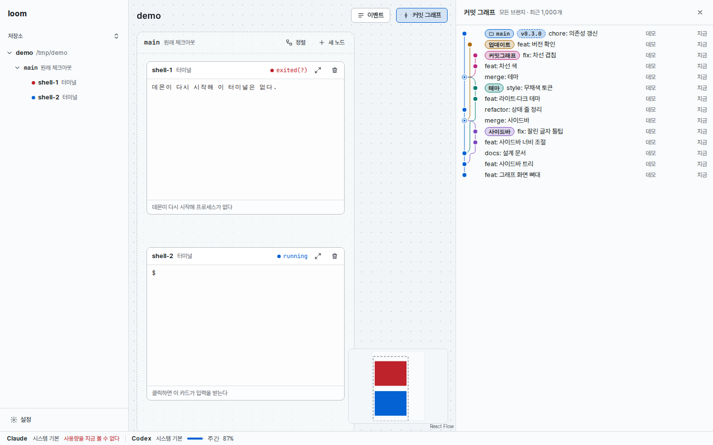
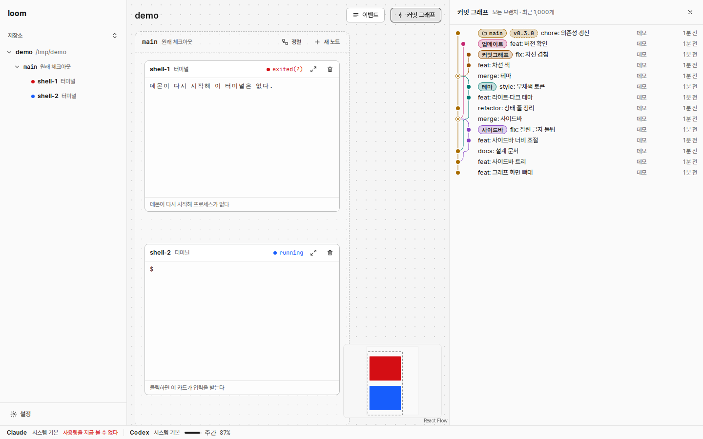
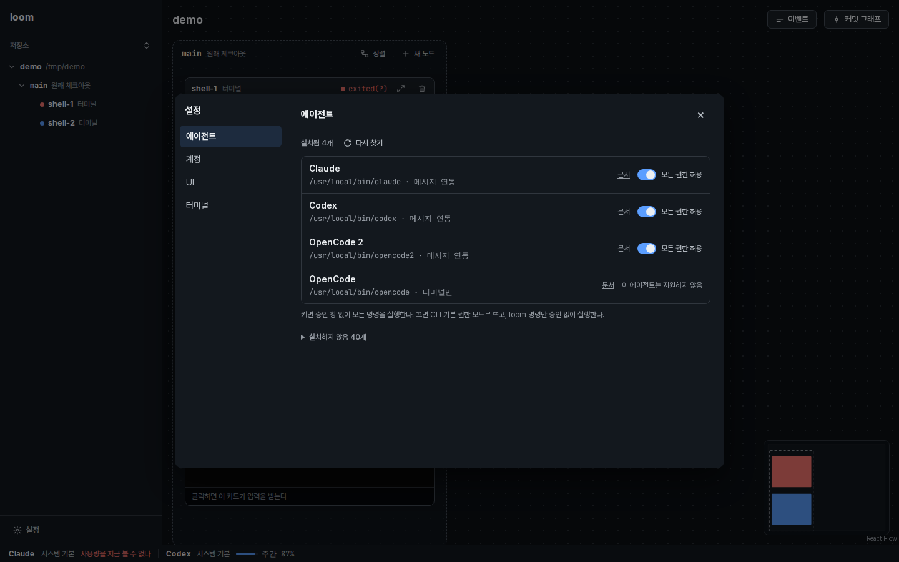
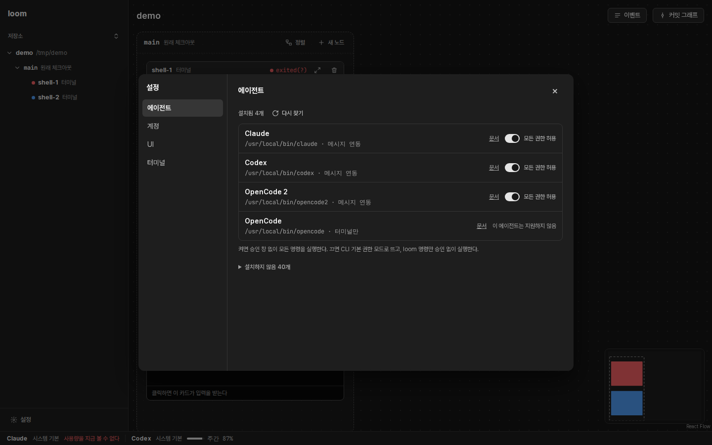
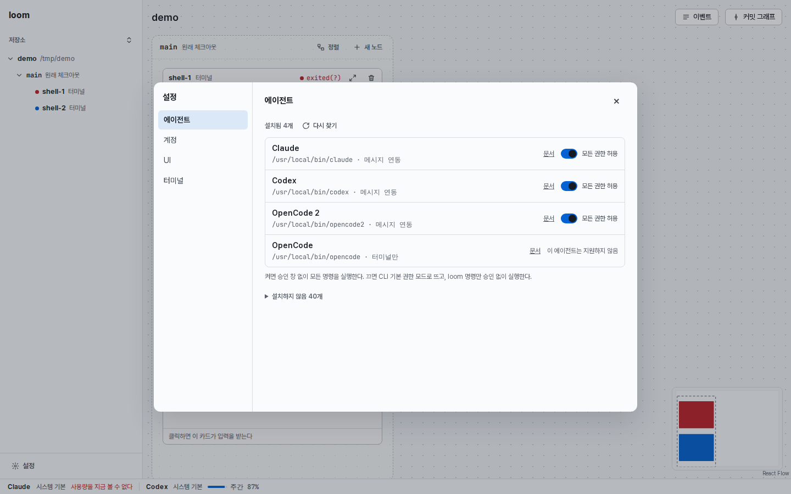
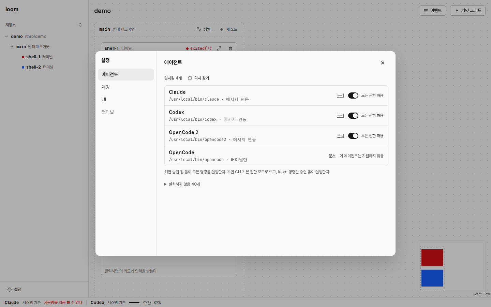

참고: Orca 사이드바(다크). 회색에 색이 없고, 고른 항목은 더 밝은 회색이다

메인 화면과 커밋 그래프 · 다크
전: 바탕·선·글자가 파란 회색, 강조가 파랑
후: 무채색 회색, 강조는 흰색, 실행 중만 파랑
메인 화면과 커밋 그래프 · 라이트
전
후: 강조는 검정, 차선 색은 Orca 색상
설정 · 다크
전
후: 켜진 스위치는 흰 바탕에 검은 손잡이
설정 · 라이트
전
후